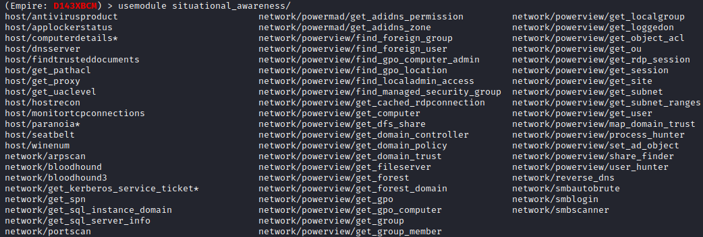

situational_awareness
Situational Awareness
modules include features for scanning the network for additional hosts, ports, shares...
(Empire)> usemodule situational_awareness/[TAB][TAB] #press two times TAB
